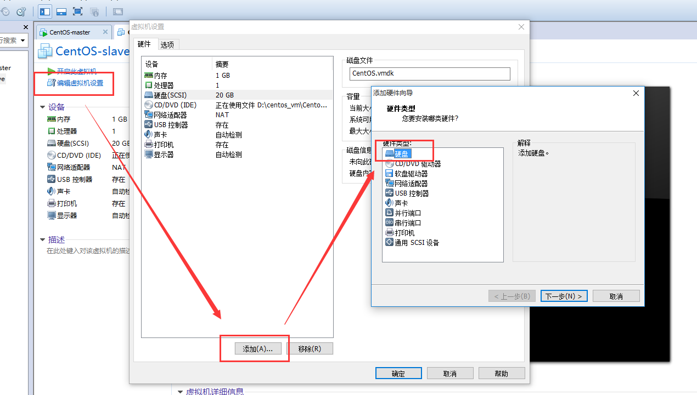

HELLO,
MY NAME IS XuJianGuo AND THIS IS MY BLOG
Linux虚拟机扩容
常见情形
我们在创建Linux虚拟机的时候默认20G的磁盘消耗，但是在后续你发现用久了之后，磁盘就满了，这个时候就需要 在本地上创建多一个虚拟磁盘。具体的步骤分下面两大步：
- 在外部创建虚拟磁盘
- 挂载磁盘到系统中
创建虚拟机磁盘
这个虚拟机磁盘的创建当然是在外部创建，我们通过编辑虚拟机的配置，通过添加操作，就可以成功添加一块指定大小 的虚拟磁盘，这个操作简单，我就不多说了。
挂载磁盘
开启虚拟机，首先我们通过fdisk命令查看下当前磁盘分配的情况。
[root@ ~]# fdisk -l
Disk /dev/sda: 21.5 GB, 21474836480 bytes
255 heads, 63 sectors/track, 2610 cylinders
Units = cylinders of 16065 * 512 = 8225280 bytes
Sector size (logical/physical): 512 bytes / 512 bytes
I/O size (minimum/optimal): 512 bytes / 512 bytes
Disk identifier: 0x0005defa
Device Boot Start End Blocks Id System
/dev/sda1 * 1 17 131072 83 Linux
Partition 1 does not end on cylinder boundary.
/dev/sda2 17 800 6291456 83 Linux
Partition 2 does not end on cylinder boundary.
/dev/sda3 800 931 1048576 82 Linux swap / Solaris
Partition 3 does not end on cylinder boundary.
/dev/sda4 931 2611 13499392 5 Extended
/dev/sda5 931 2611 13498368 83 Linux
Disk /dev/sdb: 3221 MB, 3221225472 bytes
255 heads, 63 sectors/track, 391 cylinders
Units = cylinders of 16065 * 512 = 8225280 bytes
Sector size (logical/physical): 512 bytes / 512 bytes
I/O size (minimum/optimal): 512 bytes / 512 bytes
Disk identifier: 0x00000000
Disk /dev/sdb doesn't contain a valid partition table
通过上面的命令我们可以明显的查看到我们有两块Disk，分别是/dev/sda和/dev/sdb。sda已经分配好了，sdb就是刚刚我们添加的那块新磁盘。
使用通过fdisk命令分区，输入m可以查看帮助，如果n就是添加一个分区，后面是显示你要的是主分区还是扩展分区，这里我选择主分区，然后设置 分区号为1，接着就是输入起始柱面，这个输入的选择就决定了你的分区大小，这里我只分一个区，最后通过w命令保存。
[root@ ~]# fdisk /dev/sdb
Device contains neither a valid DOS partition table, nor Sun, SGI or OSF disklabel
Building a new DOS disklabel with disk identifier 0x0ad1017e.
Changes will remain in memory only, until you decide to write them.
After that, of course, the previous content won't be recoverable.
Warning: invalid flag 0x0000 of partition table 4 will be corrected by w(rite)
WARNING: DOS-compatible mode is deprecated. It's strongly recommended to
switch off the mode (command 'c') and change display units to
sectors (command 'u').
Command (m for help): m
Command action
a toggle a bootable flag
b edit bsd disklabel
c toggle the dos compatibility flag
d delete a partition
l list known partition types
m print this menu
n add a new partition
o create a new empty DOS partition table
p print the partition table
q quit without saving changes
s create a new empty Sun disklabel
t change a partition's system id
u change display/entry units
v verify the partition table
w write table to disk and exit
x extra functionality (experts only)
Command (m for help): n
Command action
e extended
p primary partition (1-4)
p
Partition number (1-4): 1
First cylinder (1-391, default 1): 1
Last cylinder, +cylinders or +size{K,M,G} (1-391, default 391): 391
Command (m for help): w
The partition table has been altered!
Calling ioctl() to re-read partition table.
Syncing disks.
现在重新用fdisk -l命令查看磁盘情况，我们会发现已经已经创建好了一个新分区。
[root@ ~]# fdisk -l
Disk /dev/sda: 21.5 GB, 21474836480 bytes
255 heads, 63 sectors/track, 2610 cylinders
Units = cylinders of 16065 * 512 = 8225280 bytes
Sector size (logical/physical): 512 bytes / 512 bytes
I/O size (minimum/optimal): 512 bytes / 512 bytes
Disk identifier: 0x0005defa
Device Boot Start End Blocks Id System
/dev/sda1 * 1 17 131072 83 Linux
Partition 1 does not end on cylinder boundary.
/dev/sda2 17 800 6291456 83 Linux
Partition 2 does not end on cylinder boundary.
/dev/sda3 800 931 1048576 82 Linux swap / Solaris
Partition 3 does not end on cylinder boundary.
/dev/sda4 931 2611 13499392 5 Extended
/dev/sda5 931 2611 13498368 83 Linux
Disk /dev/sdb: 3221 MB, 3221225472 bytes
255 heads, 63 sectors/track, 391 cylinders
Units = cylinders of 16065 * 512 = 8225280 bytes
Sector size (logical/physical): 512 bytes / 512 bytes
I/O size (minimum/optimal): 512 bytes / 512 bytes
Disk identifier: 0x0ad1017e
Device Boot Start End Blocks Id System
/dev/sdb1 1 391 3140676 83 Linux
然后我们通过mkfs命令格式化新分区
[root@ ~]# mkfs -t ext3 /dev/sdb
mke2fs 1.41.12 (17-May-2010)
/dev/sdb is entire device, not just one partition!
Proceed anyway? (y,n) y
Filesystem label=
OS type: Linux
Block size=4096 (log=2)
Fragment size=4096 (log=2)
Stride=0 blocks, Stripe width=0 blocks
196608 inodes, 786432 blocks
39321 blocks (5.00%) reserved for the super user
First data block=0
Maximum filesystem blocks=805306368
24 block groups
32768 blocks per group, 32768 fragments per group
8192 inodes per group
Superblock backups stored on blocks:
32768, 98304, 163840, 229376, 294912
Writing inode tables: done
Creating journal (16384 blocks): done
Writing superblocks and filesystem accounting information: done
This filesystem will be automatically checked every 37 mounts or
180 days, whichever comes first. Use tune2fs -c or -i to override.
最后创建一个新的目录，将新磁盘挂载到指定目录中
[root@ ~]# cd /
[root@ /]# mkdir disk2
[root@ /]# mount /dev/sdb /disk2
[root@ /]# df -h
Filesystem Size Used Avail Use% Mounted on
/dev/sda2 6.0G 2.8G 2.9G 50% /
tmpfs 499M 0 499M 0% /dev/shm
/dev/sda1 124M 28M 91M 24% /boot
/dev/sda5 13G 161M 12G 2% /data
/dev/sdb 3.0G 69M 2.8G 3% /disk2